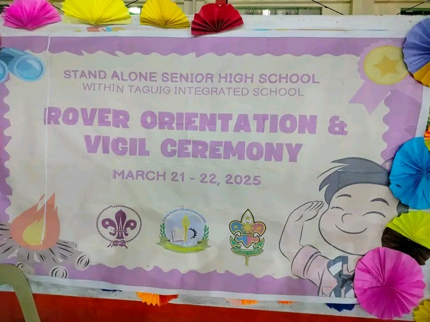
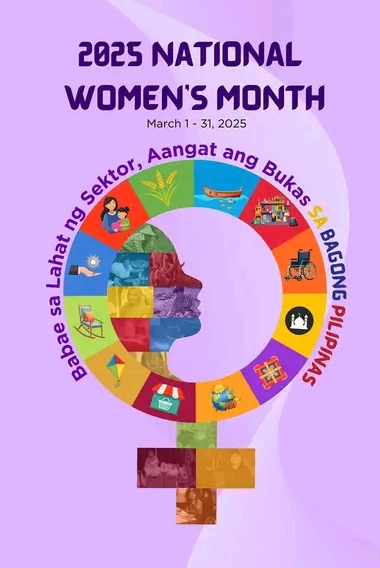
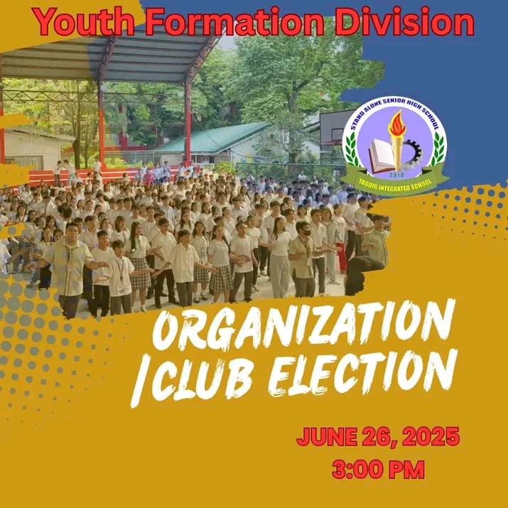
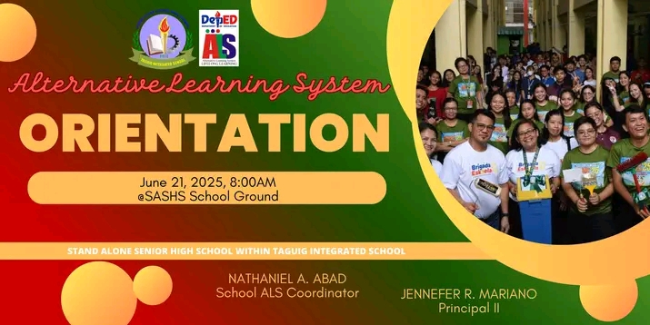
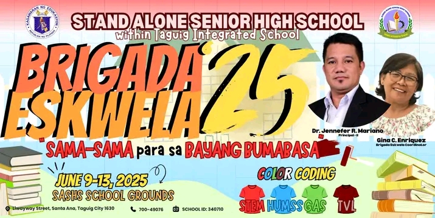
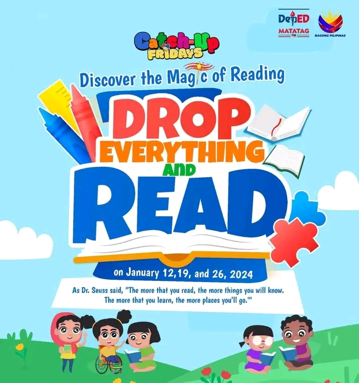

|  |  |  |
|---|---|---|
| A rover orientation is an introductory session for new members of a Rover Scout unit. | International women's day(IWD) is a global celebration held annually on March 8th. | A club election is a process where members choose their leaders or representatives. |
|  |  |  |
|---|---|---|
| The Alternative Learning System (ALS) orientation is an introductory program designed to inform learners about ALS program. | Brigada eskwela is a program in the Philippines that mobilizes stakeholders to participate in school maintenance and improvement. | DEAR is a program that encourages students to set aside dedicated time for reading, choose books that loves them, develop a love for reading. |